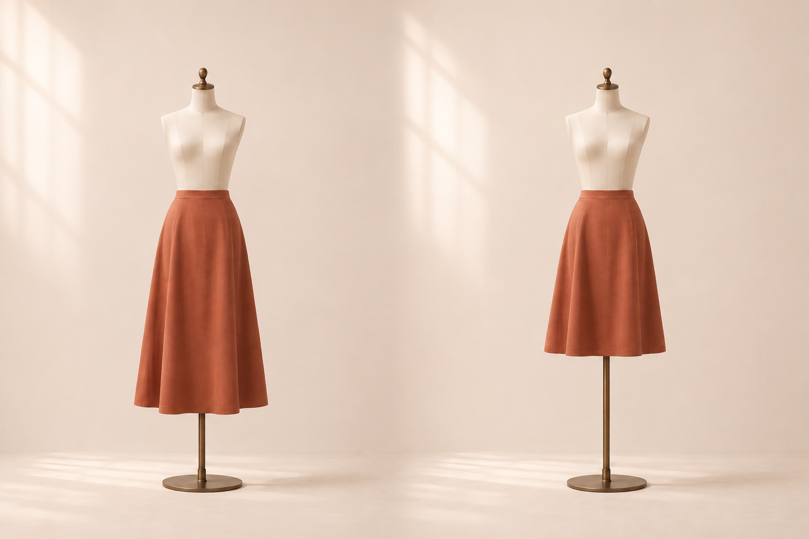

MADE FOR YOU · BAKERSFIELD, CA
Find your next fit.
Explore an alteration, organize your wardrobe, or plan an outfit.
- 01 Your garment
- 02 Explore the look
- 03 Plan your fitting
A LITTLE BEFORE & AFTER
Picture the possibilities.
BEFORE Original length

AFTER Knee length
A small change. A new favorite.Plan your everyday, lounge, athletic, and work outfits on a neutral mannequin.
YOUR STUDIO NOTEBOOK
A new chapter
for your favorite clothes.
Demo requests are saved in this browser only. Nothing is sent to the studio.